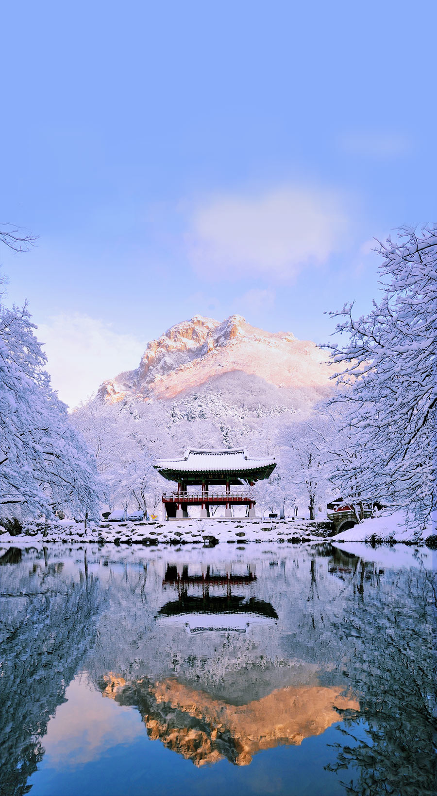

做一个济州岛的岛民，住进时间造就的自然宝藏里，数百万年的火山岛，四面环绕的太平洋，自会为你打开一个新世界。
像韩国当地人那样，被顺天市的绿色自然疗愈，也被丽水的小众精致惊艳，一旦进入全罗南道，迎接你的只有地道韩国味。
逃离城市喧嚷，去文艺釜山吧！那些随处可见的彩色涂鸦、文艺民宅，会带你发现生活的本真，还有久违的那颗少女心。
谁说韩国只有摩登城市和明媚大海？当江原道的冬雪到来，属于北国的雪原、温汤，即将为你开启一场冬季冰雪奇缘。
前言 | 在你眼中，釜山是怎样的存在？2019年，工作步入第八个年头。八年前的懵懂与锐气被时间中和，情绪也习惯了在负能量与自我安慰中找寻平衡。前几日看脱口秀听到一个段子，说挤地铁最能反映出当下青年人的生存状态。早上上班，一股蛮力冲上地铁，谁也别碰我，一副要去“干”这个世界的样子。下班呢，松松垮垮靠在地铁的某个角落，俨然一副被世界“干掉”的样子。段子虽是段子，击中笑点也戳中泪点，每天的我，像大多数人一样，学会与生活和解。但有一点不同的是，学会了和解，却没丧失斗志。过去这几年，钢筋水泥，熬夜加班，当每次欲哭无泪感觉快要被生活打败的时候，都要用一次旅行作为缓冲。每到一个地方，眼前的风景，擦肩而过的人，熟悉或陌生的味道，久而久之像是一座围墙把自己圈起来。享受旅行本身的乐趣，脚下是自己走出的路，抬头是属于自己的天空。每次放空后再次归来，才发现短暂的忘记并不是放弃，旅行不是逃离，是为了满血复活后的扛起。这一次，我又暂时逃离了。花了4天的时间飞到距离北京2小时的釜山。用时间交换空间，去深度感受一个外表清新文艺，内心温暖柔软的地方。去过上百个城市，故地重游的不多，但釜山算是一个。如果你问我釜山到底是怎样的存在让我故地重游，我想说，答案都在接下来的故事中。等到故事都看完，风景都看透，你会发现，让人意犹未尽的釜山，去几次也不够。【关于我】我是约约皮，旅行、文艺、轻生活，一个都不能少。如果你喜欢我的文字和摄影作品，欢迎随时交流。草梁伊巴古路 | 168级台阶，故事满满生活节奏越来越快，每天小跑着都感觉要被时代甩在后面，但偏偏来到釜山，适合慢走。来釜山...
约约皮 (北京)前言 | 这次旅行的VlogAnNyeongHaSeYo~手握五年多次签，就是可以任性的说走就走。何况是这么近距离，近到以为并未出国，Visa卡都扔在家里。韩国，是我第三次来了。你以为拥有充满魅力大海的釜山就是韩国？No~你以为走在潮流前端好逛好买的首尔就是韩国？No~对，它们都是韩国，但不是完整的韩国。千万不要在你只去了一两个地方就说你认识了一个国家。世界很大，多出去看看，便会发现自己依然不认识它。这回我们不去首尔，也不去釜山，我们去位于韩国南海岸的顺天和丽水，这两个地方属于全罗南道，是韩国本国人旅行的地方，我就假装一下当地人，去见识一下不曾知道的南海岸。两个地方距离非常近，火车仅20分钟，巴士也才40分钟车程，而这两个地方是完全不同风格的。↑顺天市--乐安邑城↑顺天市--顺天湾国家园林↑顺天市--顺天湾湿地↑丽水市--世博会EXPO↑丽水市--Big-O↑丽水市--丽水星球水族馆↑丽水市--姑苏洞天使壁画巷↑丽水市--梧桐岛↑丽水市--海上缆车↑丽水市--突山公园、突山大桥↑丽水市--浪漫布帐马车街↑丽水市--突山大桥先欣赏美景，交通方式和其他的实用信息我会放在游记最后，着急的小伙伴可以点相应的目录跳转。🌾 顺 天 Suncheon-si 🌾顺天市，在丽水市的北端，整个城市面积有70%是山地，而受南海岸的海洋气受影响，冬季也并不太冷。顺天当然也是世界著名的海岸湿地之一，有巧夺天工的园林，还有保持着500年前原貌的古老村落，在这里可以充分和大自然来一场亲密接触。【玩】梦回古代「乐安邑城」在顺天市还有这么一个在群山怀抱中的古城--乐安邑城，以前这里的居民遇到倭寇入侵，家家户户出来抵挡，后来觉得不如建个城墙围起来更安全。乐安邑城经历了战... | 168级台阶，故事满满生活节奏越来越快，每天小跑着都感觉要被时代甩在后面，但偏偏来到釜山，适合慢走。来釜山...
摄影师Pinky (北京)“和喜欢的一切在一起”，很长一段时间里，这是我的个性签名。环游济州岛的五天时间里，我很多次想起这句话，眼睛发着光，认同的点头。济州岛有很多的主题博物馆，恨不得将一个主题下的美好的体验一次性全部奉上；济州岛有很多的咖啡馆和民宿，拥有者将自己的心头好统统打包呈现，欢迎每一个到来的客人。如果说东南亚海岛的生活方式是“不羁放纵爱自由”，是随性，是没有羁绊的疯狂；那济州岛则是“我要稳稳的幸福”，是经过规划后的笃定，是让人心安的认真。拥有4万8千只海洋生物的亚洲最大水族馆，给小朋友很多惊喜，把大人变成好奇的孩子。“房东大叔坐在门前和小狗一起打瞌睡，房东太太在花园里为花草浇水”，住进日出峰旁的民宿，在清晨看到一幅梦想中的退休生活图景。哦雪绿，绿茶博物馆的名字带着无厘头的可爱，在这里，四肢和五官可以共同感知绿茶带来的体验，或许这是身体发出的感叹。从一只小熊，到世界最大的泰迪熊博物馆，精彩的创意可以有最简单的载体。一排排彩色美食车聚集在一起地方，没有忧伤。多么爱花的人，才会在山里建一个花园，然后打理成最美的模样。如果想要同时看到全世界94种橘子，来济州岛柑橘博物馆就可以了。面朝大海，落地玻璃大窗，一个能时刻抓住济州岛蓝天的地方。在海边拥有一条街，画上最喜欢的涂鸦，卖最受欢迎的咖啡，养最萌的狗，整条街上都诉说着：和喜欢的一切在一起。还有，你看，济州岛集齐了那么多那么多的蓝。这次行程环游济州岛一圈，依据景点的集中程度，刚好可以分成五个主要区域，每一个区域用一天的时间刚刚好。如果济州岛是漂浮在海上的大蛋糕，那五天的时间，是它的最佳赏味时间...
馆长王菲呀 (北京)Vlog视频攻略旅途中收获冬日限定技能寒冷的冬天打卡景点，不如在去学一项冬季限定新技能。十二月韩国的滑雪季开始了！在出发前，我们预定好了仁川机场到江原道的车辆，预约好了滑雪课程，约定滑雪课程：https://www.hanguowenwo.cn/landing/czdv1jflpk4dhjhtj?from=singlemessage&isappinstalled=0到韩国下午两点，司机师傅在机场接我们，师傅的名字叫Young，非常nice，我们乘坐的是一辆宽敞整洁的六座专车。在路上，Young和我们介绍了江原道，也和我们聊着日常。冬日下午的阳光透过车窗暖暖的洒在身上，中途会在休息站停留20分钟，冬天天黑得早，到凤凰滑雪场下午六点多天已经黑了（仁川机场到凤凰滑雪场坐专车车程三个多小时）。晚上我们入住的是凤凰滑雪度假村里的凤凰酒店，Young等待我们顺利办完酒店Checkin手续之后才放心离开。凤凰度假村里包含滑雪场、酒店、餐厅、水上游乐园（蓝色峡谷）、便利店等等，很适合家庭出游。凤凰酒店属于简约工业风格，在酒店房间可以看到滑雪场，房间的床很舒服，睡下去很快就入睡了。对了，为了环保房间的牙具是收费的，最好自带洗漱用品。凤凰度假村初识滑雪第二天早上九点我们预订的滑雪课程教练来酒店接我们去滑雪场，滑雪教练名叫Noah，他是四川人，每一年他过的都是冬天，现在是北半球的滑雪季，他在韩国作滑雪教练，等到了南半球的滑雪季，他便会飞去南半球。报名了snowclub课程的学员，snowclub会根据你的国籍分配可以说和你相同母语的教练，上课当天会到你住的酒店接你去滑雪场，可以用滑雪学校专门的休息室，也可以优先租滑雪用具，在人很多的滑雪季，这也是报名snowclub的优势所在。Noah帮助我们租了滑雪用具：滑雪板、滑雪头盔、墨...
诗诗小菲 (其他)